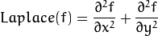
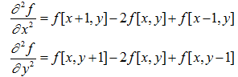
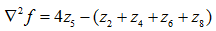
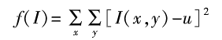
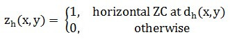
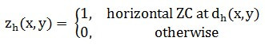

在无参考图像质量评价中，算法的精准程度对图像质量的准确定位有着十分重要的作用。我们通过对目前一些主流的无参考图像评价算法应用以公开的数据库进行研究，包括基于边缘检测的评价算法，基于能量分布的评价算法和基于像素信号量的评价算法进行测试和分析。
图像质量评价算法
基于边缘检测
基于边缘检测方法的核心思想是边缘的强度和扩散宽度与图像的模糊程度有着直接的联系，该类方法的特点是需要进行边缘检测，采用基于边缘的方式主要是因为大部分的图像模糊时，会造成其整体边缘会展宽。无论是通过拍摄系统还是HVS系统，信号都相当于经过了一个模糊处理。人眼一般被认为是一个低通滤波器，其认知过程相当于进行了模糊。 在2002年的时候，Marziliano等提出了垂直Sobel边缘的检测方法，这种方法是以边缘分析作为基本依据，以查找灰度值中的某一局部极值点，收集其所有的边缘宽度，并筛选出像素的值，进行均值的计算，以此作为模糊度的估算。 2003年Ong等通过对梯度查找Carmy边缘宽度，之后以指数进行宽度均值的计算，以此估计出模糊度。 2004年Zhou Wang提出了结构相似性（SSIM）。通过对SSIM的深入研究，对于特定的SSIM指数可以用于图像压缩算法设计中的速率失真优化。 2006年Guan-Hao CHEN提出了一种改进的基于边缘的结构相似性ESSIM实验方法，它比较了失真图像块与原始图像块之间的边缘信息，并通过基于边缘的结构。 2009年由江南财经大学王正友等人提出的一种结合边缘检测的新估计方法中将图像边缘检测和对图像的模糊估计结合起来。经过实验比较,该方法的检测结果与主观感知质量有很好的相关性,而且算法具有复杂性低、无需参考源、检测准确性高、可移植性强等特点,实用性比较强。 2016年由东北石油大学的段玉波等人提出的一种新的图像边缘检测客观评价方法中基于Canny的边缘检测三准则的基础上,将边缘检测图像重构相似度指标、边缘可靠性指标以及边缘连续性指标进行融合,得到图像边缘检测客观评价指标。实验表明该方法对图像边缘检测效果评判所具有的精确性明显优于主观评价体系所具有的不确定性。 这种以边缘为评价依据的方式，对图像内容存在依赖，若边缘特征不明显，则可能导致最终评价结果不准确；但这种方法在概念上较为直观，并且所使用的计算都较为简易，并且衍生的算法也符合人体视觉的相关特征。 典型方法有：基于边缘强度的恰可见模糊(Just Noticeable Blur, JNB)方法，基于边缘扩散程度的方法和两者结合的模糊检测累积概率(Cumulative Probability of Blur Detection, CPBD)方法。
基于边缘检测分析
在众多边缘检测方法中拉普拉斯是一个常用的边缘检测算子。
拉普拉斯是一种二阶导数算子，是一个与方向无关的各向同性（旋转轴对称）边缘检测算子。
图像二阶微分在亮的一边是负的，在暗的一边是正的。常数部分为零。可以用来确定边缘的准确位置，以及像素在亮的一侧还是暗的一侧。
拉普拉斯算子二维函数f(x,y)的拉普拉斯是一个二阶的微分，定义为：其：可以用多种方式将其表示为数字形式。对于一个3*3的区域，经验上被推荐最多的形式是：定义数字形式的拉普拉斯要求系数之和必为0。
若只关心边缘点的位置而不顾其周围的实际灰度差时，一般选择该算子进行检测。一张单通道的图片，灰度值的飞跃证明此处为图像边缘，而拉普拉斯算子十分有利于这种边缘的检测。
而显而易见的是，一张较为模糊的图像，其含有较少的边缘。而含有较多的边缘，则可以说明这张图像是清晰的。
经过试验发现在一阶导数的极值位置，二阶导数为0。所以我们使用这个特点来作为检测图像边缘的方法。 但是，普拉斯对噪声敏感，会产生双边效果，二阶导数的0值不仅仅出现在边缘(它们也可能出现在无意义的位置), 不能检测出边的方向。
于是我们采用高斯滤波进行滤掉这些点。
我们首先将图像进行灰度化和高斯滤波，再将图片中的单一通道用下面的拉普拉斯掩模做卷积运算： 再进行方差的计算并根据大量实验确定阈值。
此算法基于以下理论：如果该图片方差较高，则正面它有着较广的频响范围，可以证明图像为正常，相对清晰的图片。但是如果图片方差较小，那么它就有较窄的频响范围，意味着图片中的边缘数量很少。正如我们所知道的，图片越模糊，其边缘就越少。
再进行方差的计算并根据大量实验确定阈值。
此算法基于以下理论：如果该图片方差较高，则正面它有着较广的频响范围，可以证明图像为正常，相对清晰的图片。但是如果图片方差较小，那么它就有较窄的频响范围，意味着图片中的边缘数量很少。正如我们所知道的，图片越模糊，其边缘就越少。
基于能量分布
基于能量分布方法核心思想是图像的模糊度与高频信息所占比例大小有关。该类方法需要进行诸如傅里叶变换、离散余弦变换和小波变换等。 2005年Shaked D提出了一个衡量图像模糊度，便于自动图像清晰度增强。这样，模糊图像将被锐化，而足够锐利的图像根本不会被锐化。提出的图像模糊度测量可用于驱动增强算法，这将锐化输入图像到名义测量。最后，所提出的模糊度度量在计算上是有效的，并且比3x3卷积需要更少的计算。它避免了许多替代方法的缺陷：频域方法提供了类似场景的清晰图像，但是该方法不利于场景改变。基于特征的方法集中于特征，但是良好性能所需的假设对于一般目的来说过于限制。 2010年Damon M.Chandler提出了一种基于最明显的失真(MAD)方法，它试图明确模型这两种不同的策略。局部的亮度和对比度掩蔽进行高品质的图像的感知失真的检测，而在空间频率成分的局部统计的变化被用来在低质量的图像感知失真外观估计的基础。 2015年黑龙江工程大学田若良等人提出了基于频域能量分割的图像模糊度评价方法。算法首先将图像变换到频域，将频域的能量进行分割，提取出能量集中区域的面积并计算其在整个图像区域中的占比，用最后的比值来衡量图像的模糊程度。该方法对于大部分平滑的图像处理结果都比较理想。 2017年天津大学的侯春萍等人通过研究图像失真改变图像的高低频成分的特点提出的沃尔什哈达玛变换域图像评价算法,将空域图像转换为局部沃尔什哈达玛变换图而后提取图像特征兵利用支持向量回归网络训练特征,获得特征到质量分数的映射关系模型实验结果表明,提出的算法具有很好的主客观评价一致性。 该类方法可以较准确地估计五种常用的图像失真程度，尤其针对高斯模糊图像失真及JPEG2000图片压缩和JPEG图片压缩上与人眼主观感知质量具有高度一致性。 该类典型方法有：基于频带系数统计的方法、基于离散余弦变换的方法以及基于局部相位一致性的方法]等。
基于能量分布分析
图像清晰时，图像中的高频分量也最多，所以我们以灰度变换作为判断模糊度评价的一种方法。通过计算图像灰度值结合像素来做为图像模糊或清晰的判断标准。我们采用Variance的方法进行图像模糊度检测。Variance函数使计算每个像素与图像灰度值的方差。 当这种方法运行需要的时间少，准确率较好，可以用于需要实时判断的情况。 在实际的研究中，我们发现一些噪声会影响到最后的实验结果。噪声为在图像上引起较强视觉效果的孤立像素点或像素块。它经常以无用的信息形式出现，扰乱图像的可观测信息。通俗地说噪声使图像局部不清晰，从而影响我们判断的正确率。后经过逆向思维，向清晰的图像加入适量的各种噪音，发现椒盐噪声对图像普遍有较大的影响，会严重影响试验结果。同时乘性噪声会对部分图像有较大影响。所以我们需要提前进行去噪处理。
基于像素信号量
基于像素信号量方法的核心思想是邻域内灰度的变化反映了图像的模糊程度，该类方法不需要进行边缘检测。 2000年Batten C F提出了基于平方梯度方法。此时只是提出一个基于梯度方法的基础形态，所以要该方法有时用于强调更尖锐的边缘，但这也可能加重高频噪声。 为了更好地模拟人类视觉系统（HVS）对模糊失真的响应，2008年Sadaka N G提出了一种基于视觉注意信息的非参考感知锐度质量度量。关于场景的显著性信息用于强调在显著区域中存在的边缘周围的模糊失真，并衰减在图像的其余部分中存在的那些失真。 2010年由西南科技大学和西南交通大学的李郁峰等人提出的一种基于灰度差分的快速聚焦评价函数——利用相邻像素在水平和垂直方向的差分乘积作为核函数。该算法保持了较好的性能同时引入了阈值滤除噪声提高了算法的稳定性。 2016年由西北大学的王红玉等人提出的基于再模糊理论的图像评价算法在再模糊理论基础上通过计算最小和最大再模糊标准差,构造了与人类视觉感知相近的NRIQAVR算法该算法符合人类视觉感知、不依赖图像内容、简单易行。 该类典型方法有基于梯度或方差的方法、基于二维局部结构张量的方法及其改进算法等。 该类方法在去噪等方面有着广泛的应用，但是基于像素值的全局统计，而忽略人眼的局部视觉因素，因此无法把握图像的局部质量。
基于像素信号量分析
部分图像是基于8*8的DCT变换的编码技巧，在使用DCT变换系数进行量化时，会照成一些量化误差，这些误差就会导致块效应或图片模糊。图片模糊主要是由于高频DCT系数的丢失。参考Zhou Wang的研究，我们首先计算跨越水平线的信号差量， 在通过计算水平方向和垂直方向的ZERO-CROSSING（ZC）率也就是边界跨零率
再依据以上计算出来的数值联系起来进行评价。
这种方法可以有效的针对因为编码技术造成的图像模糊问题。
在通过计算水平方向和垂直方向的ZERO-CROSSING（ZC）率也就是边界跨零率
再依据以上计算出来的数值联系起来进行评价。
这种方法可以有效的针对因为编码技术造成的图像模糊问题。